Uma ideia de como podemos trabalhar
Pagar, entendere ganhar.Num lugar só.
Pagamento com cashback no app do cliente iGreen, do problema ao protótipo navegável.
Sergio Vieira · UX
Por que fizemos isso
Começamos pelos dados,não pela tela
A motivação
O cliente paga em lugares diferentes e não vê, num lugar só, o que pagou, como pagou e o que ganhou.
E o cashback que existe hoje fica longe da conta.
Como analisei
Levei a pauta das regras que faltam. A base respondeu com a regra e a tabela de origem
Service blueprint: como energia, telecom e seguros cobram hoje
13 apps: regulamentos, telas públicas e reclamações
Como é hoje
Três produtos,três jeitos de pagar
Energia
Telecom
Seguros
Nenhum lugar mostra o que o cliente pagou, como pagou e o que ganhou
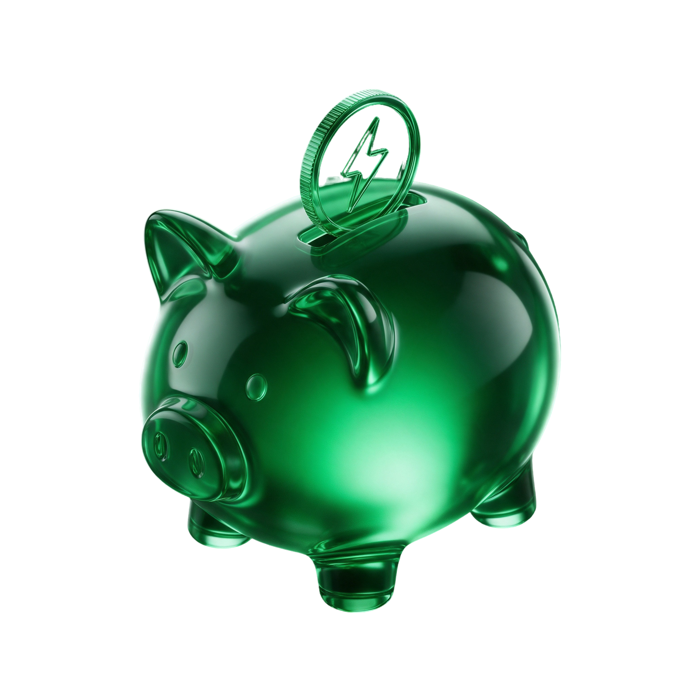
O que a base interna respondeu
O cashback de hojenão conversa com a conta
Nos três produtos. Pagar a conta não rende nada
Saldo à parte, separado do abatimento da fatura
É cancelado se o indicado for desvalidado ou cancelar
No Pay, “cashback” é palavra proibida
O volume pago por indicação é residual
Sem parceiro para saldo de cliente e sem fluxo para aprovar oferta
Reclamações no mercado:
Cashback que não caiuCondição escondida no regulamentoCobrança do clubeEconomia mostrada brutaClientes e prováveis clientes
O que sabemos,supomos e não sabemos
Certezas · a confirmar
60–180dias
até a primeira fatura. Antes dela, o boleto da fornecedora parece golpe
>10% → 10%
o desconto de quem tem mais de 10% e paga com atraso
Suposições · a testar
- →Ver o ganho antes de pagar faz pagar em dia
- →Um número só, já líquido, aumenta a confiança
- →Juntar as contas dá motivo para voltar ao app
Dúvidas · ninguém sabe ainda
- ?O cliente sabe que tem cashback?
- ?Confia em pagar a conta de luz no app?
- ?Por que quem paga fora do app paga fora?
- ?Quanto o cashback pesa, perto do desconto?
O que o mercado faz · 13 apps
Ninguém juntapago, forma e ganho
0 de 4
grandes apps de pagamento dão cashback por conta paga
Nubank, Inter, Mercado Pago e PicPay excluem boleto e contas
0
apps mostram, lado a lado, quanto cada forma de pagar rende
O Mercado Livre mostra só a forma escolhida
1
processo da FTC contra a Uber por mostrar economia sem descontar a mensalidade
Aberto em 2025
A proposta
Um app,quatro partes
O que a pesquisa pediu
Cinco regrasguiaram cada tela
01
Um número só, em reais, já líquido
O mesmo valor no pagar, no comprovante e no retorno
02
O certo separado do prometido
Desconto vale na hora. Cashback tem data para cair e para vencer
03
Oferta antes, nunca culpa depois
“Pague até 11/10 e ganhe R$ 33,97”, e não “você perdeu”
04
Nada some
Compensando, expirado ou recusado: a pessoa sabe onde está
05
Assinar e usar são dois atos
O automático só liga se o cliente quiser
A jornada principal
Da conta de luz ao cashback,em cinco toques
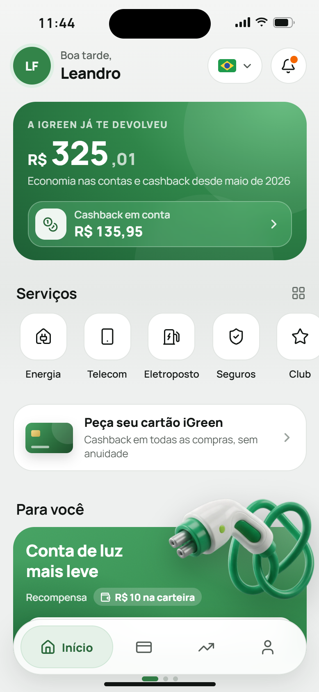
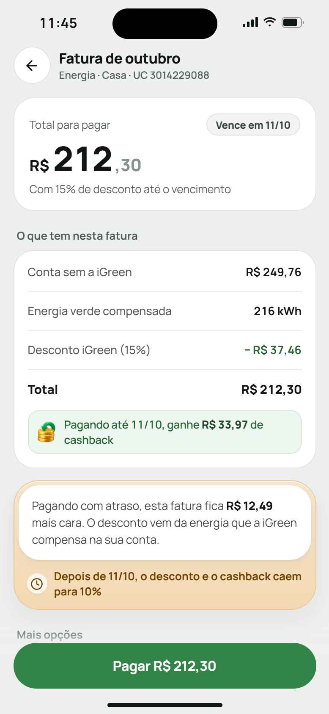
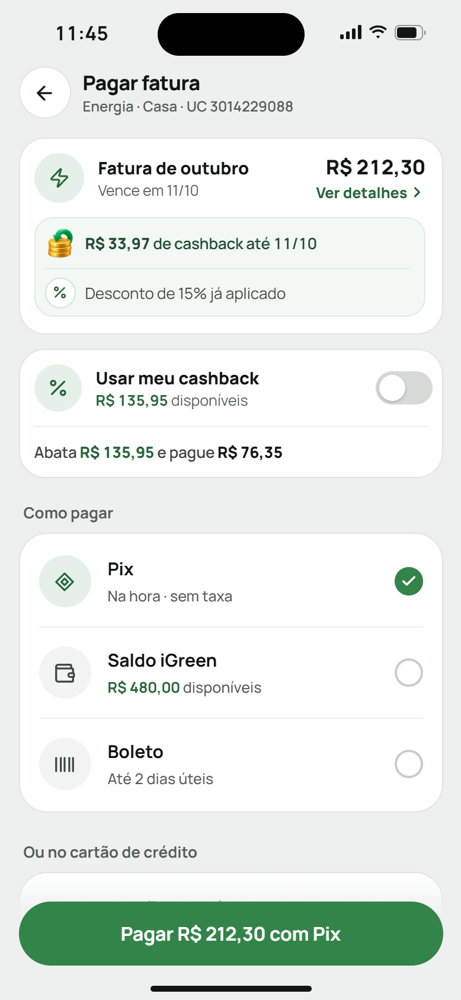
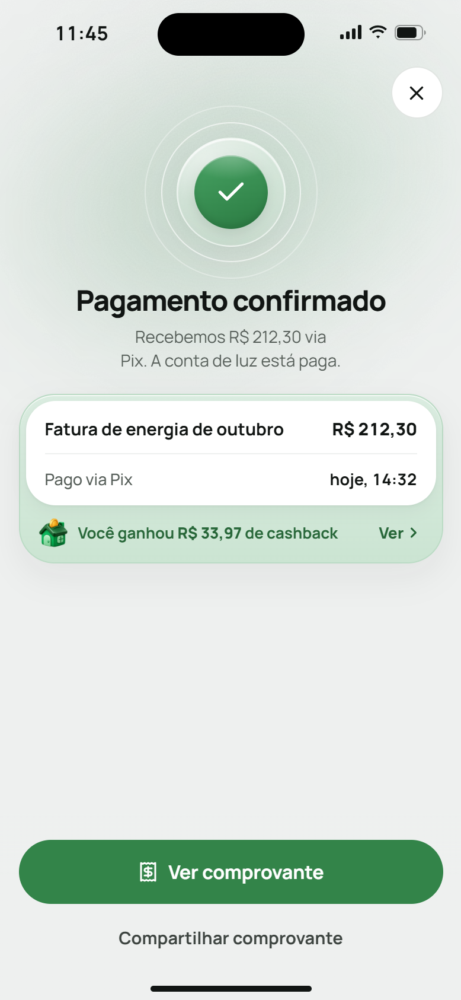
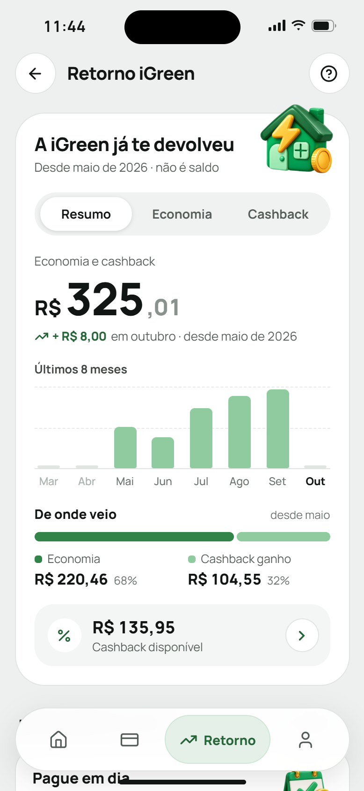
O cashback, em números
Uma conta de luz,do jeito que o cliente vê
Atrasou? A conta sobe R$ 12,49, e o desconto e o cashback caem para 10%.
O ciclo do cashback
Recebeu, usou,e sabe o que vence
de cashback recebido,
no total
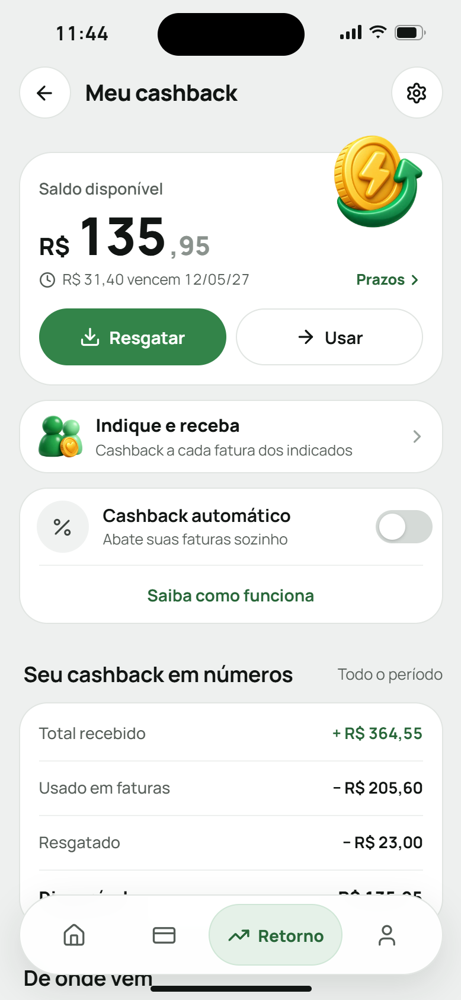
Os momentos difíceis
Onde costuma dar reclamação,a tela explica
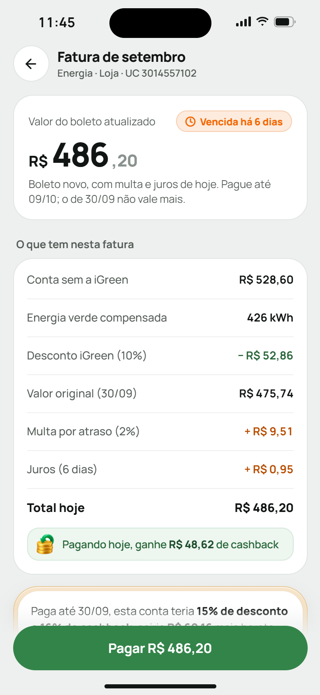
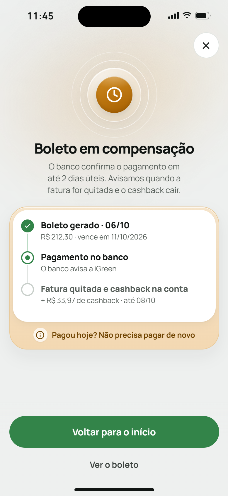
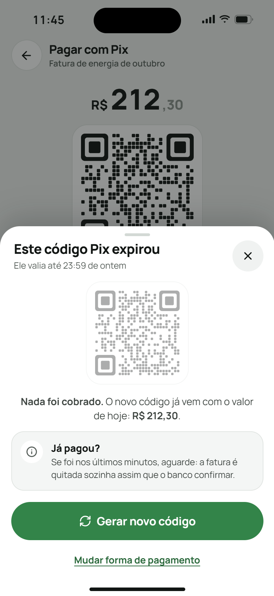
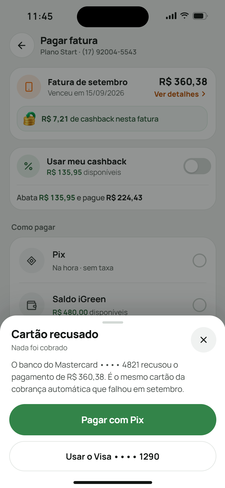
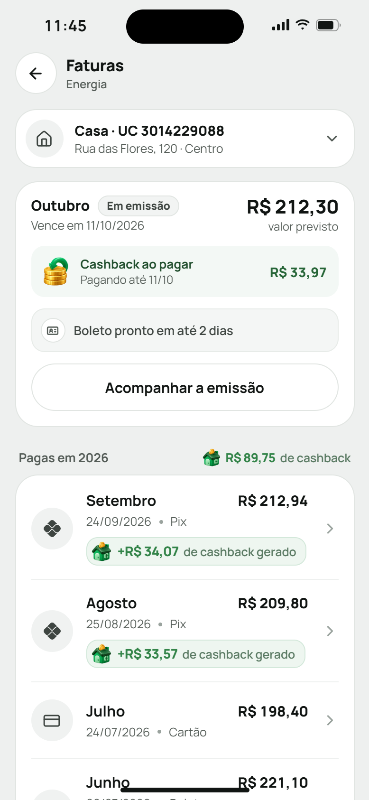
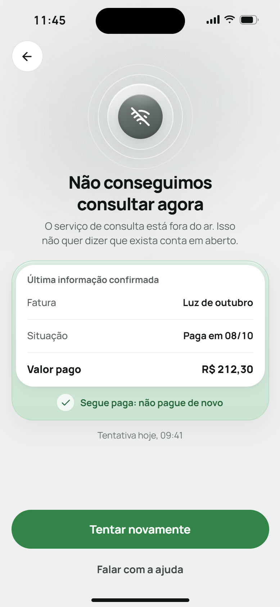
A evolução
De 3 telasa um app inteiro
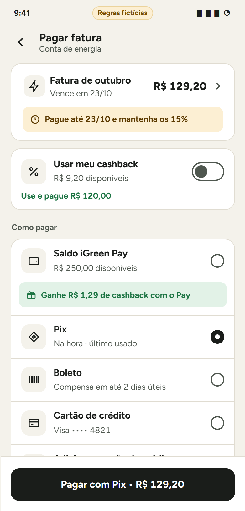
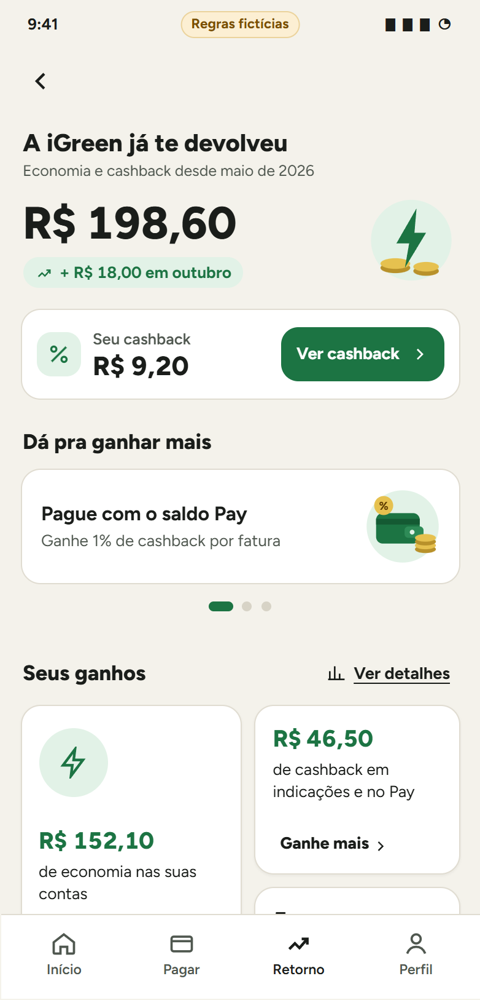
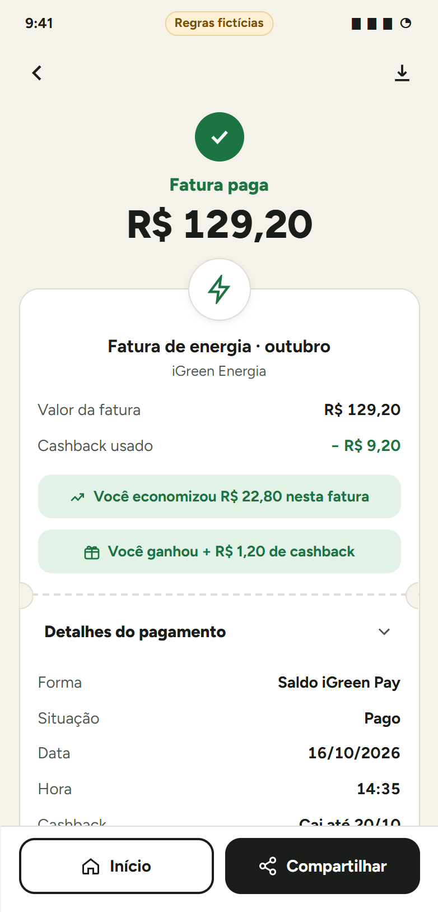
fluxos navegáveis, ~180 telas,
ampliados pelo UX com mais contexto
O que o teste da primeira versão mudou
- A faixa do prazo diz o que se perde
- O comprovante destaca o valor pago
- O boleto fica “em compensação”, não “pago”
- O Retorno avisa: “não é saldo”
- “Pay” virou “Saldo iGreen”
O teste foi simulado: é hipótese, não evidência
Como chegamos aqui
O UX conduz,os agentes ajudam
Pergunta real e público
Mapa dos pagamentos e 13 apps
Cruza com a base interna
Desenha as 3 primeiras telas
Roteiro, teste simulado e revisão
Amplia para 32 fluxos, com mais contexto
Plano de medição
Decide o que levar ao time
Os agentes são uma ajuda que estou construindo com o Claude e refino a cada projeto. Eles pesquisam e revisam; quem avalia e decide é o UX. O humano não sai da etapa.
13
apps analisados, com fonte
32
fluxos navegáveis
~180
telas
18
eventos de medição desenhados
Com honestidade
Muita coisa aquiainda é suposição
Nada ainda foi medido com cliente real.
O que ainda não rastreamos
Sem rastreio,cada etapa é uma pergunta
Pagamento · por fatura
Cashback · por pessoa
Para decidir com segurança, falta medir
- Contas pagas em dia pelo app
- Onde a pessoa desiste
- Chamados sobre pagamento e saldo
- Pagamento duplicado e falhas
18
eventos desenhados,
ainda no papel
Sem esses números, cada decisão aqui continua sendo aposta.
Onde estamos
O design está pronto.Falta decidir e validar
Feito
- Mapa dos pagamentos dos 3 produtos
- Benchmark de 13 apps, com fonte
- Pauta das regras para as áreas
- Protótipo com 32 fluxos
- Roteiro do teste com clientes
- Rascunho do plano de medição
Falta
- As 5 regras de negócio
- Teste com 5 clientes reais
- Validação técnica dos gateways
- Parecer jurídico sobre saldo
- Textos de oferta aprovados
- Design system e entrega ao desenvolvimento
O pedido de hoje
Hoje eu precisode duas coisas
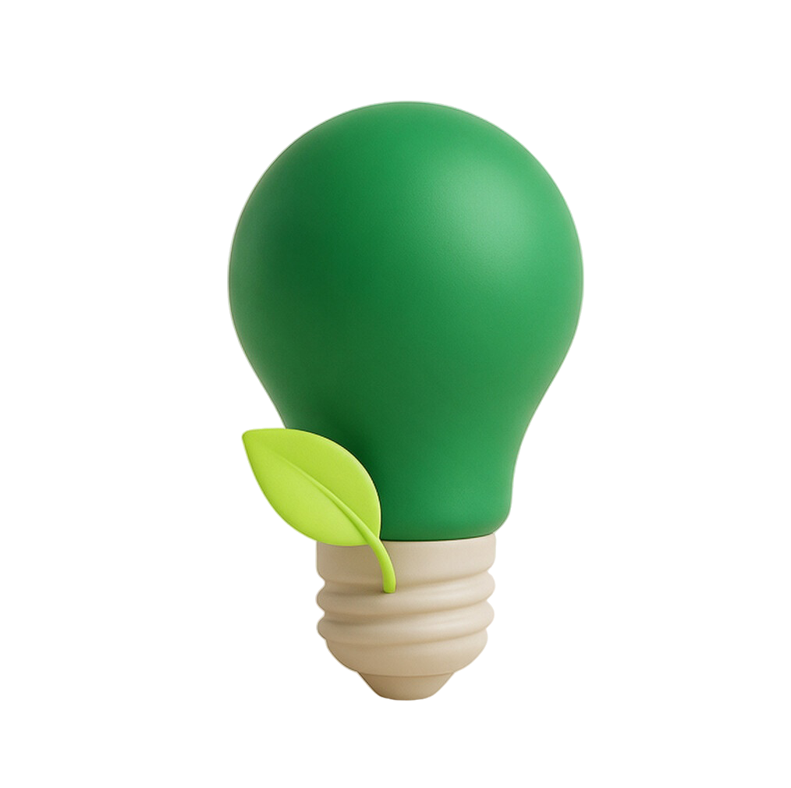
regras de negócio
para decidir
Sem elas, o cashback não sai do protótipo
clientes reais
para testar
No celular deles, antes de desenvolver
O que eu peço
As 5 decisõesque destravam o cashback
O cliente pode guardar saldo no app?
Pode exigir autorização do Banco Central (Lei 12.865/2013). Não é parecer jurídico
Pagar rende cashback? Quanto, e quem paga?
Os 16% e 2% do protótipo são ilustração. No Pay, “cashback” é palavra proibida hoje
O cashback paga qualquer fatura? Tem validade?
Hoje o cashback de indicação fica separado da fatura
A mensalidade do Club entra no total mostrado?
Mostrar economia sem descontar a mensalidade levou a Uber a processo na FTC
Quem aprova os textos de oferta?
Pelo CDC, a oferta obriga a empresa. Não há fluxo de aprovação documentado
Próximos passos
Da decisãoao piloto
Passo 1
Reunião de regrasAs 5 decisões, com produto, financeiro, jurídico e Pay. Cerca de 30 min
Passo 2
Protótipo com regras reaisTrocar os valores fictícios e ajustar o roteiro de teste
Passo 3
Teste com 5 clientesNo celular deles: entendem o que pagam e o que ganham?
Passo 4
Medir e decidir o pilotoCom os eventos e funis desenhados, sem número inventado
Pagar, entender e ganhar, num lugar só.
Abrir o protótipoObrigado
Obrigado.
Esta apresentação foi para mostrar o valor do estudo de mercado, da pesquisa e do UX com agentes, num caso real da iGreen.
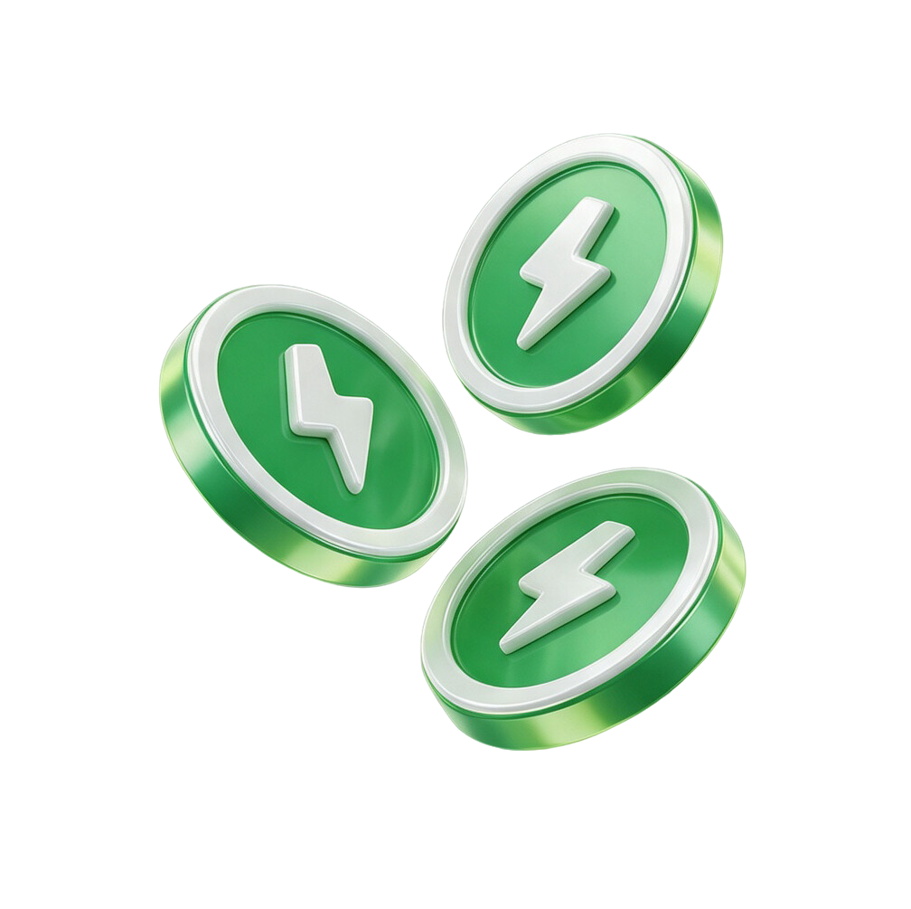
Apêndice A
O que é reale o que é fictício
Real, a confirmar com cada área
- O desconto da energia cai para 10% com atraso, para quem tem mais
- O cashback de indicação fica como saldo no app do Club
- Seguros paga fora do app e confirma em até 30 minutos
- A mensalidade do Club é de R$ 29,90
Fictício, só para ilustrar
- 16% de cashback na luz em dia, 10% com atraso; 2% no telecom
- Cashback em Pix, boleto e saldo; cartão de crédito sem cashback na luz
- Validade de 12 meses; resgate para o saldo iGreen ou por Pix
- Saldo iGreen para pagar e cartão iGreen com cashback
- Clientes, valores, unidades e telefones
Apêndice B
De onde vemcada afirmação
Produto
Service blueprint feito com os Contexts de Energia, Telecom e Seguros. Respostas da base interna da iGreen, a confirmar com cada dono.
Mercado
Duas rodadas de benchmark com 13 apps: regulamentos, centrais de ajuda, telas públicas e reclamações. Tudo com link.
Teste
Roteiro de teste pronto. O teste da primeira versão foi simulado, com 3 sessões fictícias: testa o processo, não o cliente.
Onde está tudo
Investigação: 03-areas/growth/investigacoes/2026-10-16-pagamento-universal/
Protótipo e versões: 06-sandbox/2026-10-16-pagamento-universal-telas/
Esta apresentação: 06-sandbox/2026-10-26-apresentacao-cashback/
Apêndice C
Os 32 fluxosdo protótipo
1 a 6
Do início ao cashbackHome e retorno, energia, boleto, Pix, saldo, usar o cashback
7 a 9
Todas as contasAba Pagar, conta vencida, quando o pagamento não dá certo
10 a 15
TelecomVencida no Pix, boleto, cashback, cartão em 3x, saldo, pagas
16 a 18
Retorno iGreenRetorno completo, boleto compensando, depois de pagar
19 a 24
CashbackGanhar mais, usar, validade, resgatar, automático, avisos
25 a 32
Estados e faturasCliente novo, em emissão, vencida, paga, fora do ar, listas